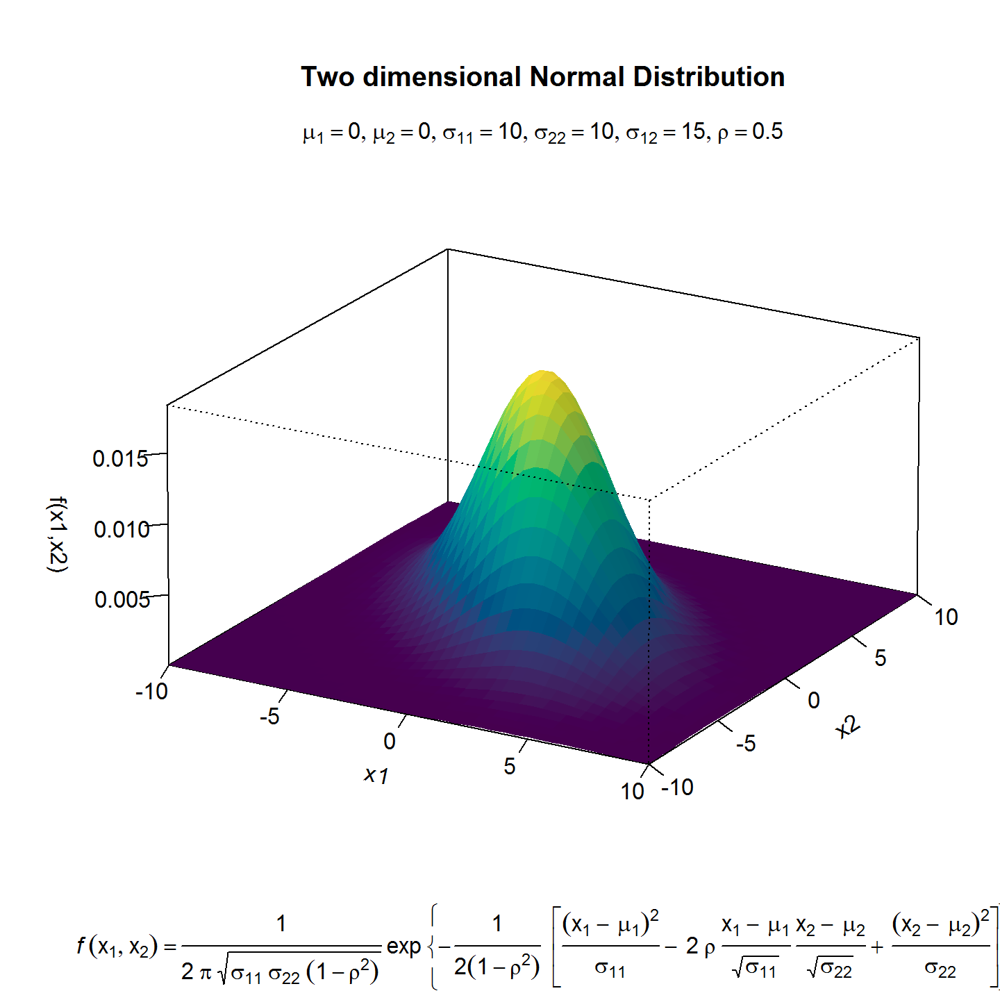
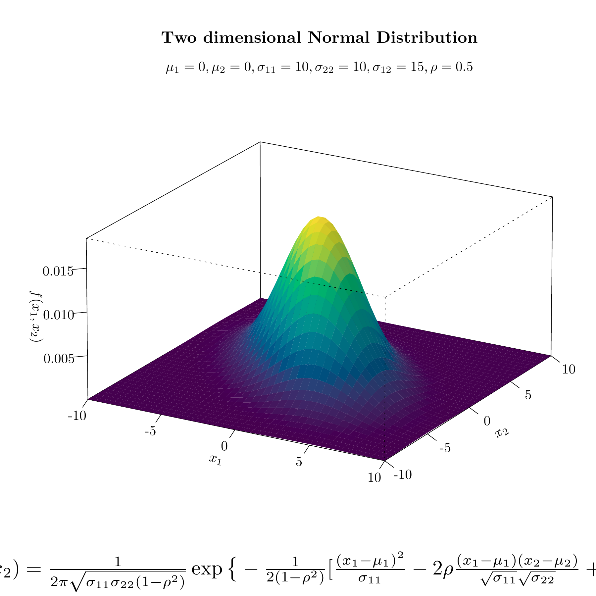
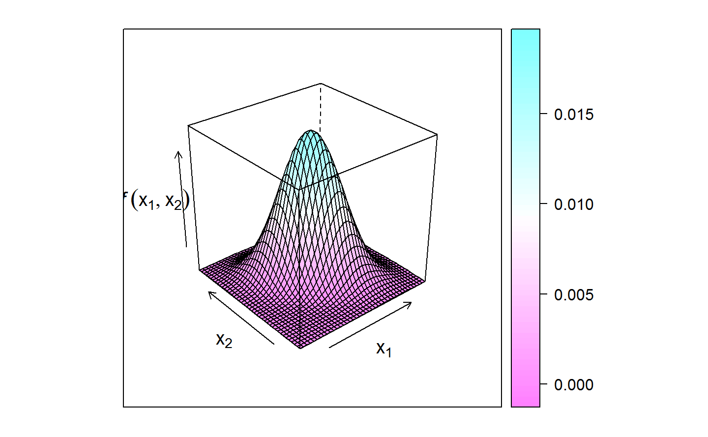
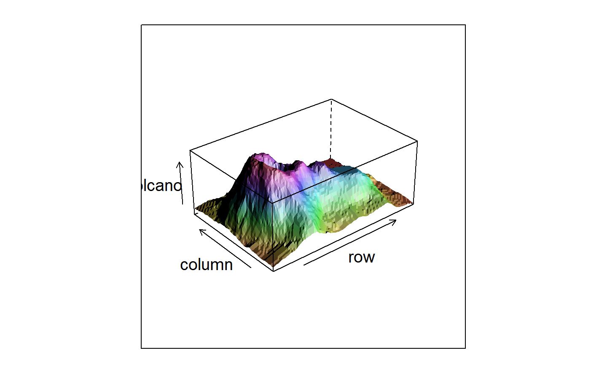
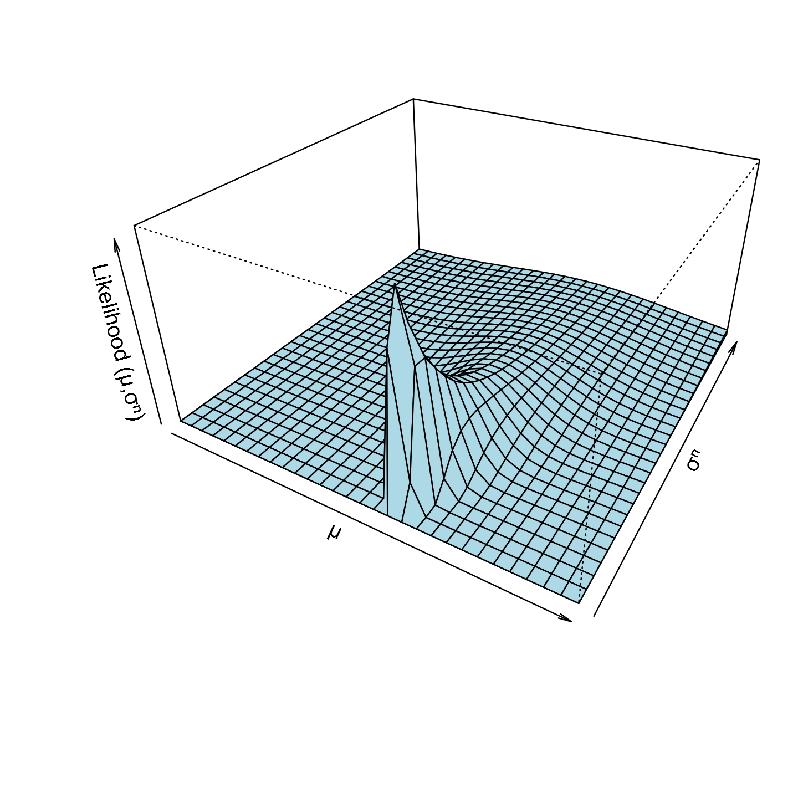

第 13 章 三维可视化
画图 graphics 使用基础 R 包和基于基础包的扩展包绘图 plotrix (Lemon 2006)
13.1 饼图
13.2 柱形图
13.3 散点图
13.4 函数图
13.5 透视图
第一个例子来自 Eric Lecoutre 的图库31，这是我见过的图形中含有巨量公式，并且用 R 实现的例子。在他的基础上我修改了颜色，设置图片尺寸，基于 persp 实现的透视图，唯一不足的是 persp 不支持表达式形式的坐标轴标签。
# library(latex2exp)
# 代码来自 http://www.ejwagenmakers.com/misc/Plotting_3d_in_R.pdf
mu1 <- 0 # setting the expected value of x1
mu2 <- 0 # setting the expected value of x2
s11 <- 10 # setting the variance of x1
s12 <- 15 # setting the covariance between x1 and x2
s22 <- 10 # setting the variance of x2
rho <- 0.5 # setting the correlation coefficient between x1 and x2
x1 <- seq(-10, 10, length = 41) # generating the vector series x1
x2 <- x1 # copying x1 to x2
# setting up the function of the multivariate normal density
f <- function(x1, x2) {
term1 <- 1 / (2 * pi * sqrt(s11 * s22 * (1 - rho^2)))
term2 <- -1 / (2 * (1 - rho^2))
term3 <- (x1 - mu1)^2 / s11
term4 <- (x2 - mu2)^2 / s22
term5 <- -2 * rho * ((x1 - mu1) * (x2 - mu2)) / (sqrt(s11) * sqrt(s22))
term1 * exp(term2 * (term3 + term4 - term5))
}
z <- outer(x1, x2, f) # calculating the density values
nrz <- nrow(z)
ncz <- ncol(z)
nbcol <- 100
color <- hcl.colors(100)
# Compute the z-value at the facet centres
zfacet <- z[-1, -1] + z[-1, -ncz] + z[-nrz, -1] + z[-nrz, -ncz]
# Recode facet z-values into color indices
facetcol <- cut(zfacet, nbcol)
par(mar = c(4.1, 4.1, 4.5, 1.5), ps = 10)
persp(x1, x2, z,
xlab = "\n x1",
ylab = "\n x2",
zlab = "\n\n f(x1,x2)",
# xlab = TeX('$x_{1}$'), # latex2exp 其实是使用 LaTeX 语法将 LaTeX 公式翻译为 R 能接受的表达式形式
# ylab = TeX('$x_{2}$'),
# zlab = TeX('$f(x_{1},x_{2})$'),
main = "Two dimensional Normal Distribution",
col = color[facetcol], border = NA, theta = 30, phi = 20,
r = 50, d = 0.1, expand = 0.5, ltheta = 90, lphi = 180,
shade = 0.1, ticktype = "detailed", nticks = 5, box = TRUE
)
mtext(expression(list(mu[1] == 0, mu[2] == 0, sigma[11] == 10,
sigma[22] == 10, sigma[12] == 15, rho == 0.5)),
side = 3)
mtext(expression(italic(f) ~ group("(",list(x[1],x[2]),")") == frac(1, 2 ~ pi ~ sqrt(sigma[11] ~ sigma[22] ~ (1 - rho^2))) ~ exp ~
bgroup("{",
paste(
- frac(1, 2(1 - rho^2)) * phantom(0),
bgroup("[",
frac((x[1] ~ -~mu[1])^2, sigma[11]) ~
-~2 ~ rho ~ frac(x[1] ~ -~mu[1], sqrt(sigma[11])) ~ frac(x[2] ~ -~mu[2], sqrt(sigma[22])) ~
+~frac((x[2] ~ -~mu[2])^2, sigma[22]),
"]")
),
"}")
), side = 1, line = 3)

图 13.1: 二元正态概率密度函数
早在 2006 年的时候，Paul Murrell 就提出来一种解决方法32，可是比较复杂，后来谢大大接手了 tikzDevice 包 (Sharpsteen and Bracken 2018) 的开发，算是比较好的解决了这个问题。
# 代码来自 http://www.ejwagenmakers.com/misc/Plotting_3d_in_R.pdf
mu1 <- 0 # setting the expected value of x1
mu2 <- 0 # setting the expected value of x2
s11 <- 10 # setting the variance of x1
s12 <- 15 # setting the covariance between x1 and x2
s22 <- 10 # setting the variance of x2
rho <- 0.5 # setting the correlation coefficient between x1 and x2
x1 <- seq(-10, 10, length = 41) # generating the vector series x1
x2 <- x1 # copying x1 to x2
f <- function(x1, x2) {
term1 <- 1 / (2 * pi * sqrt(s11 * s22 * (1 - rho^2)))
term2 <- -1 / (2 * (1 - rho^2))
term3 <- (x1 - mu1)^2 / s11
term4 <- (x2 - mu2)^2 / s22
term5 <- -2 * rho * ((x1 - mu1) * (x2 - mu2)) / (sqrt(s11) * sqrt(s22))
term1 * exp(term2 * (term3 + term4 - term5))
} # setting up the function of the multivariate normal density
z <- outer(x1, x2, f) # calculating the density values
nrz <- nrow(z)
ncz <- ncol(z)
nbcol <- 100
color <- hcl.colors(100)
# Compute the z-value at the facet centres
zfacet <- z[-1, -1] + z[-1, -ncz] + z[-nrz, -1] + z[-nrz, -ncz]
# Recode facet z-values into color indices
facetcol <- cut(zfacet, nbcol)
par(mar = c(4.1, 4.1, 4.5, 1.5))
persp(x1, x2, z,
xlab = "$x_{1}$",
ylab = "$x_{2}$",
zlab = "$f(x_{1},x_{2})$",
main = "Two dimensional Normal Distribution",
col = color[facetcol], border = NA, theta = 30, phi = 20,
r = 50, d = 0.1, expand = 0.5, ltheta = 90, lphi = 180,
shade = 0.1, ticktype = "detailed", nticks = 5, box = TRUE
)
mtext("$\\mu_1 = 0,\\mu_2 = 0,\\sigma_{11} = 10,\\sigma_{22} = 10,\\sigma_{12} = 15, \\rho = 0.5$", side = 3)
mtext("$f(x_{1},x_{2}) = \\frac{1}{2\\pi\\sqrt{\\sigma_{11}\\sigma_{22}(1-\\rho^2)}}\\exp\\big\\{-\\frac{1}{2(1-\\rho^2)}[\\frac{(x_1 - \\mu_1)^2}{\\sigma_{11}} - 2\\rho\\frac{(x_1 - \\mu_1)(x_2 - \\mu_2)}{\\sqrt{\\sigma_{11}}\\sqrt{\\sigma_{22}}} + \\frac{(x_2 - \\mu_2)^2}{\\sigma_{22}}]\\big\\}$",
side = 1, line = 2, cex = 1.5)

图 13.2: 二元正态密度函数
library(lattice)
wireframe(z ~ x1 + x2,
data = data.frame(x1 = x1, x2 = rep(x2, each = length(x1)), z = z),
xlab = expression(x[1]), ylab = expression(x[2]),
zlab = expression(italic(f) ~ group("(",list(x[1],x[2]),")")),
colorkey = TRUE, drape = TRUE)

图 12.1: 表达式二元密度函数
## volcano ## 87 x 61 matrix
wireframe(volcano, shade = TRUE,
aspect = c(61/87, 0.4),
light.source = c(10,0,10))
希腊字母用 unicode 字符代替，不要使用 pdf 不然数学符号 \(\sigma\) 不能正确渲染，推荐选择 cairo_pdf
# https://stackoverflow.com/questions/41190525/adjust-margins-in-persp-persp3d-in-r
# https://stackoverflow.com/questions/37571376/how-to-customize-nticks-in-persp-r
# https://stackoverflow.com/questions/43507680/are-xlab-ylab-and-zlab-in-persp-incompatible-with-bquote
x <- seq(-10, 10, len = 30)
y <- seq(0, 5, len = 30)
f <- function(x, y) {
dnorm(2, x, y)
}
z <- outer(x, y, f)
persp(x, y, z,
theta = 30, phi = 30, expand = 0.5, col = "lightblue",
xlab = "\u03bc", ylab = "\u03c3\u207F",
zlab = paste("Likelihood ", "(\u03bc,\u03c3\u207F)", sep = "")
)

图 13.3: unicode 字符代替希腊字母
- plotrix 包含231页手册 pie3D
- scatterplot3d 三维图形
- plot3D 三维图形
- barsurf 三维条形图 barsurf: Bar, Surface and Other Plots
library(barsurf) #
ls("package:barsurf")
library(plotrix)
ls("package:plotrix") # 161 个函数
library(scatterplot3d) # 1 个函数
ls("package:scatterplot3d")
library(plot3D)
ls("package:plot3D") # 51个函数
library(rgl)library(barsurf)
library(colorspace)
x <- y <- 1:4
f <- function(x, y) x^2 + y^2
z <- outer(x, y, f)
plot3d.bar(, , z)
plot3d.bar(, , volcano)
plot3d.surf(, , volcano)参考文献
Lemon, Jim. 2006. “plotrix: A Package in the Red Light District of R.” R-News 6 (4): 8–12.
Sharpsteen, Charlie, and Cameron Bracken. 2018. TikzDevice: R Graphics Output in Latex Format. https://CRAN.R-project.org/package=tikzDevice.